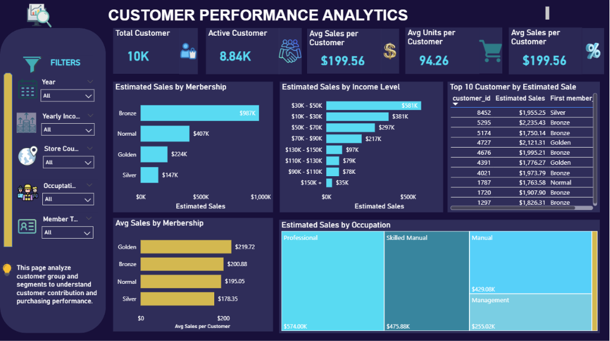
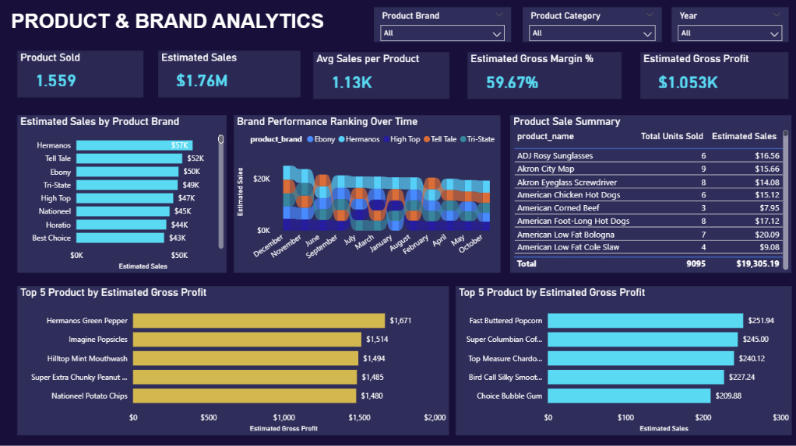
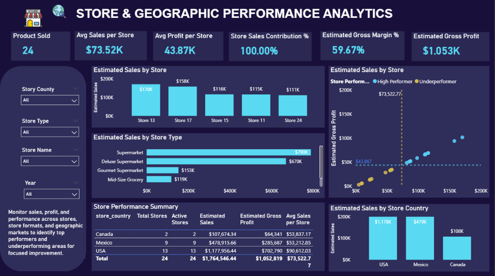
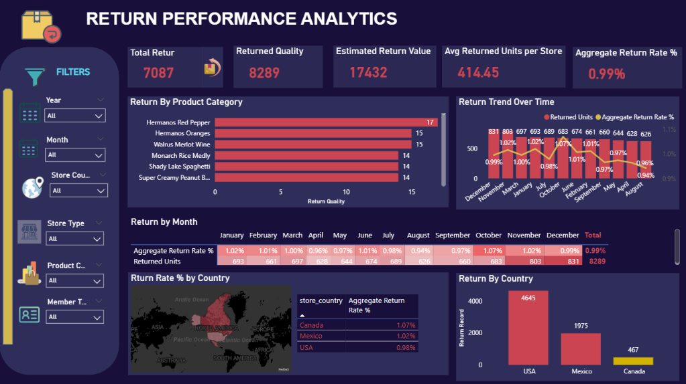

Project Overview
This project is an end-to-end Retail Sales & Customer Performance Analytics solution designed to transform fragmented
multi-table retail data into actionable business insights. Using MySQL and SQL, I developed a structured data pipeline
covering data exploration, quality assessment, cleaning, transformation, exploratory data analysis, and business analysis.
I then built a star-schema analytical model and five-page interactive Power BI dashboard using DAX to evaluate sales,
customers, products, stores, geographic markets, estimated profitability, and returns.
The final solution enables management to move from high-level performance monitoring to detailed investigation of the factors driving business results.
Business Problem
The multi-store retail business lacks a consolidated analytical view of sales, customer, product, store, geographic,
profitability, and return performance. This limits management's ability to understand how business performance changes over
time, identify the customers, products, stores, and markets driving results, detect underperforming areas, and recognize
opportunities for performance improvement. An integrated analytics solution is therefore required to transform transactional and operational retail data
into measurable KPIs and actionable insights that support evidence-based commercial and operational decision-making.
How can fragmented retail data be transformed into an integrated analytical solution that helps management monitor performance,
identify key business drivers, and make better commercial and operational decisions?
Project Objectives
The main objective of this project is to develop an end-to-end retail analytics and Business Intelligence solution that provides management with a consolidated view of business performance, identifies key performance drivers and underperforming areas, and generates actionable insights to support data-driven commercial and operational decisions.
- Provide a consolidated view of overall retail performance and trends.
- Identify high-contribution and high-value customer segments.
- Evaluate product and brand sales and estimated profitability.
- Compare performance across stores, store formats, and geographic markets.
- Monitor product-return volume and return rates.
Business Questions
- How is the retail business performing overall, and how has performance changed over time?
- Which customer groups contribute most to business performance?
- Which products and brands drive sales and estimated profitability?
- How does performance vary across stores, formats, and geographic markets?
- Where are product returns concentrated?
Analytical Approach
Dashboard





Key Insights & Business Impact
The Retail Sales & Customer Performance Analytics dashboard provides an integrated view of sales, estimated profitability,
customer behavior, product and brand performance, store and geographic performance, and product returns. The analysis identified
the following key business findings:
Overall Business Performance: The business generated approximately $1.76M in estimated sales and $1.05M in estimated gross profit, with an estimated gross margin of 59.67%. Performance varies across time, geographic markets, and store formats, demonstrating that overall results are driven disproportionately by particular areas of the business.
Geographic and Store Performance: The USA is the largest market, contributing approximately $1.18M in estimated sales, followed by Mexico at approximately $479K and Canada at approximately $108K. Supermarket and Deluxe Supermarket formats are the strongest contributors. Individual store analysis also reveals substantial differences in sales and estimated profit, indicating opportunities to benchmark underperforming stores against stronger locations.
Customer Performance: Customer contribution differs significantly across segments. Bronze members generate the largest total estimated sales, while Golden members demonstrate higher average sales per customer. This indicates that customer volume and individual customer value should be considered separately when evaluating segment performance. Income and occupation also contribute to meaningful differences in purchasing behavior.
Product and Brand Performance: Product performance is uneven across the portfolio. Several brands and products contribute more strongly to estimated sales and gross profit, while others show comparatively weaker performance. Brand rankings also change over time, suggesting that product and brand performance should be monitored dynamically rather than evaluated only using overall totals.
Return Performance: The dataset contains 7,087 return records and 8,289 returned units, with an overall Aggregate Return Rate of approximately 0.99%. Although returns are relatively low overall, their distribution varies across countries, products, stores, and time periods. Canada shows a higher relative return rate than the USA and Mexico, while the USA contributes the largest absolute return volume because of its larger sales base.
Project Outcome
This project demonstrates a complete business-driven Data Analytics and Business Intelligence workflow, including business framing, database setup, data exploration, data quality assessment, cleaning, SQL transformation, star-schema modeling, EDA, business analysis, Power BI modeling, DAX KPI development, interactive dashboard design, insight generation, and actionable recommendations.
The final solution provides a structured framework for identifying performance drivers, high-value customer segments, product and store performance, underperforming areas, geographic differences, and return patterns.